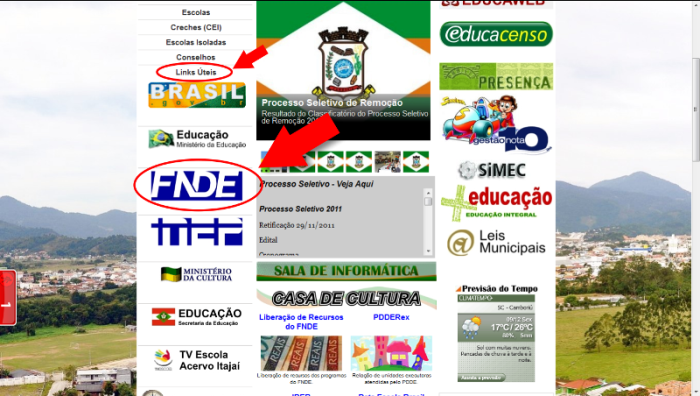

| |
| PDDE – Veja como trabalhar com o Programa |
| Camboriú, quarta-feira, 07 de Dezembro de 2011. |

|
1 INTRODUÇÃO1.1 PDDE (Programa Dinheiro Direto na Escola) - FNDE: www.fnde.gov.brCriado em 1995, o Programa Dinheiro Direto na Escola (PDDE) tem por finalidade prestar assistência financeira, em caráter suplementar, às escolas públicas da educação básica das redes estaduais, municipais e do Distrito Federal e às escolas privadas de educação especial mantidas por entidades sem fins lucrativos, registradas no Conselho Nacional de Assistência Social (CNAS) como beneficentes de assistência social, ou outras similares de atendimento direto e gratuito ao público.1.2 Como acessar:Acesse o Portal da Educação de Camboriu:Clique em Links Úteis: Depois em FNDE:  Na Página do FNDE clique em Dinheiro Direto na Escola: O PDDE é um valor doado para Escola, ou seja, evite boatos que dizem que o FNDE irá retirar o dinheiro da conta caso não se gaste todo. Após adesão, o FNDE cria uma Conta Corrente no Banco do Brasil do CNPJ da APP. Para o FNDE: APP=UEx (Unidade Executora). Cada UEx pode conter uma ou mais escolas cadastradas. 2 DA EXECUÇÃOFaz-se a adesão através do PDDEWeb para atualizar os dados e decidir quanto de CUSTEIO e CAPITAL virá no próximo exercício.CUSTEIO - tudo que tem vida útil menor que 2 ou 3 anos, por exemplo, manutenção na escola, serviços prestados; etc. CAPITAL - Bens duráveis que ampliam o valor físico da escola. Depois que é feita adesão, deve-se consultar freqüentemente o PDDERex, a Liberação de Recursos e Extrato da Conta. PDDERex – Descreve todo o recurso que a UEx irá receber no ano. Liberação de Recursos - Serve para saber se o recurso foi ou não depositado na conta. (Tanto o PDDERex quanto a liberação de Recursos podem ser acessadas no Portal da Educação na coluna central logo abaixo do link "Casa de Cultura") 2.1 Acesso ao PDDERexClique no link no Portal.Depois clique em "Consulta Unidade Executora".  Digite o CNPJ e buscar. 2.2 Acesso a Liberação de Recursos:Clique no link no Portal.Digite o CNPJ e buscar. 2.3 Da execução e acompanhamentoAcessar o Portal e clicar em Setores da Secretaria.Entrar na página de Prestação de Contas. Baixar os arquivos: "DEx" "Relação de Bens" ATENÇÃO: baixar estes arquivos logo no começo do ano. Consultar e preencher estes arquivos freqüentemente (não se baseie somente pelo extrato). 2.4 Das comprasSempre exigir duas coisas importantes na hora da compra:- Exigir sempre da empresa a NOTA FISCAL (Exceto quando é um serviço de pessoa física - recibo contendo CPF) - Exigir sempre que o cheque seja depositado o mais rápido possível (para evitar que o cheque "voe") 3 DA PRESTAÇÃO DE CONTAS3.1 Os documentos necessários para prestar contas para a Prefeitura listam abaixo:* Demonstrativo da Execução da Receita e da Despesa e de Pagamentos Efetuados (DEx);* Relação de Bens Adquiridos ou Produzidos; * Extrato Anual de Conta; e * Notas Fiscais. Observações Importantes: * Não será aceito nenhum tipo de Cupom Fiscal (se houver algum problema relacionado ligar imediatamente para o Departamento de Prestação de Contas); * Somente será aceito recibo quando for serviço de pessoa física, onde deverá constar o CPF do prestador do serviço de acordo com a Resolução Vigente do PDDE. * A escola deverá trazer Justificativa por qualquer eventualidade que não esteja prevista nos padrões da RES17-19/04/2011 e anexar a Prestação de Contas. 3.2 PASSO-À-PASSO para elaborar a prestação de contasa - Retirar o extrato anual da conta (deve constar: "Saldo anterior" do ano passado e todas as movimentações da conta)b - Tirar cópia das notas fiscais e do extrato anual; c - Elaborar a DEx e a Relação de Bens e entregar assinados para Prefeitura. 4 COMO PREENCHER A DExO preenchimento da DEx é feito através de 4 passos: identificação, informação de valores, descrição das compras e autenticação.4.1 IdentificaçãoContém os seguintes campos:Campo 01 Programa/ação: Informar qual o programa está sendo executado, neste caso o PDDE. Campo 02 Exercício: Ano do Exercício. Campo 03 Nome da Razão Social. Campo 04 Número do CNPJ. Campo 05 Endereço. Campo 06 Município. Campo 07 UF. 4.2 Informação de ValoresTodos os campos devem ser informados conforme o PDDERex, ou seja, informar sempre dividindo o valor de CUSTEIO do valor de CAPITAL.Campo 08 – Saldo do Exercício Anterior: este valor deve ser igual ao valor reprogramado na Prestação de Contas do ano anterior (Campo 15). O valor de CUSTEIO somado com o valor de CAPITAL é igual ao Saldo Anterior do extrato anual. Campo 09 – Valor Recebido no Exercício: inserir o total do valor recebido no ano pelo FNDE que se encontra no PDDERex. Campo 10 – Recursos Próprios: por exemplo, quando se "tira do bolso" para completar uma compra na qual o recurso do PDDE seja insuficiente (raramente o campo é preenchido). Campo 11 – Rendimento de Aplicação Financeira: quando o recurso é aplicado em uma conta aplicação (raramente o campo é preenchido). Campo 12 – Devolução ao FNDE (-): Quando o Presidente ou o Diretor resolve devolver o recurso para o Governo Federal. Campo 13 – Valor Total da Receita: O arquivo faz a conta. Campo 14 – Despesa Realizada (-): Todo o valor de compra do ano (o arquivo faz a conta). Campo 15 – Saldo a Reprogramar para o Exercício Seguinte: o valor pode ser reprogramado e utilizado a partir de 1º de janeiro do ano seguinte (o arquivo faz a conta). PREENCHA A DEx FREQUÊNTEMENTE E SEMPRE VERIFIQUE ESTE CAMPO ANTES DE EFETUAR UMA COMPRA. Campo 16 – Saldo Devolvido: (o arquivo faz a conta). Campo 17 - Período de Execução: Sempre do início do ano até o último dia ou até o dia do encerramento das atividades financeiras da escola no ano. Campo 18 – Nº de Escolas Atendidas: Uma UEx pode conter várias escolas cadastradas. 4.3 Descrição das comprasCampo 19 – Item: Numeração das atividades para fins de organização.Campo 20 – Nome do Favorecido e CNPJ ou CPF. Campo 21 – Tipo de bens e materiais adquiridos ou serviços contratados: Não precisa informar o produto, mas sim sua categoria, exemplo: Material de Expediente. Campo 22 – Origem: não precisa preencher. Campo 23 – Natureza da Despesa: Custeio ou capital. Campo 24 – Documento: Tipo: NF – Nota Fiscal. Número: Número da NF. Data: Data da compra. Campo 25 – Pagamento: Nº Ch/OB: Número do cheque. Data: Data do cheque ou a data que o valor caiu na conta (extrato). Campo 26 – Valor (R$): Os valores devem ser colocados em colunas diferentes – Custeio e Capital. Campo 27 – TOTAL: Total das compras (o arquivo faz a conta). 4.4 AutenticaçãoPreencher a data, o nome e função do responsável da UEx e assinatura.5 COMO PREENCHER A RELAÇÃO DE BENSSimilar a DEx, mas somente o CAPITAL deve ser preenchido.6 CONCLUSÃOSe estes passos informados neste arquivo forem colocados em prática, tanto a Execução quanto a Prestação de Contas deste programa se torna mais fácil e rápida. |